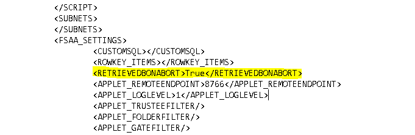

Summary: Updated bulk import to also use the DeletedUSN from TBL_FSAA_ResourceMap when determining which resources get merged into tier 1
Issue:
Summary: Updated bulk import to also use the DeletedUSN
from TBL_FSAA_ResourceMap when determining which resources get merged into tier 1
Submitted by:
Michael Burrofato
Affected Versions:
8.1
Affected Module:
SA - DC - FSAA
Dev Ticket:
- SAFS-15546
- DCFSAA.dll 8.1.985
- FSAASrv.dll 8.1.985
- Stealthbits.StealthAUDIT.DataCollectors.FSAA.dll 8.1.985
- StealthAUDITRPC.exe 8.1.103
- StealthAUDITRPCClient.dll 8.1.103
- Stealthbits.StealthAUDIT.DataCollectors.FSAA.RPCClient.dll 8.1.0
- Stealthbits.StealthAUDIT.DataCollectors.dll 8.1.59
- INIFileParser.dll 2.5.2
- FSAAConfig.xml
Hotfix
YouTrack/Escalations
- SAFS-15546/escalation 28292
Customers
- Westfield Insurance Companies (Ohio Farmers)
Cumulative List of fixes included since Service Pack:
- SAFS-14545 SDD Bulk Import clearing tier 1 data prior to checking if DLPEX db exists
- SAFS-14541 Remove Description in FSAAConfig.xml
- SAFS-14548 FSAC Bulk Import performance issue
- SAFS-2705 15281 - FSAA unspecified error
- SAFS-14573 22741 - FSAA Migration Query 7.2 to 8.0 Duplicate Column Error
- SAFS-14598 22741 - FSAA Migration Query 7.2 to 8.0 could not convert variant of type (Null) into type (Integer)
- SAFS-14593 Update bulk import to not delete Activity and DLPEX tier 2 dbs.
- SAFS-2707 19757 - FSAC Bulk Import Rollback Due to Unspecified Error
- SAFS-14595 22840 - There is an error in XML document (0, 0). ---> System.OverflowException: Value was either too large or too small for an Int32.
- SAFS-14633 Update FSAA to not delete DLPEX db when streaming
- SAFS-14566 Update FSAA to pass parameters to SDD
- SAFS-14672 FSAC Access Violation on scans
- SAFS-14685 Access violation when cancelling streaming FSAA scan due to timeout or DC-side streaming error
- SAFS-14596 22751 - Access Violation with FSAA Scan v8.1
- SAFS-14483 22116 - Do Not Delete Activity Data Automatically (8.1+ Implementation)
- SAFS-14723 NFS Scans Don't Scan Subfolders when "Limit Subfolder Depth" is checked
- SAFS-14720 23415 - DFS Collection: FSAA.FSAAException: Unable to determine domain: 5
- SAFS-14670 23199 - FSAA doesn't throw error when service account doesn't have enough permission to scan shares.
- SAFS-14688 Applet log level of "None" sends all log messages to StealthAUDITRPC.exe trace log file
- SAFS-14677 22992/22994 - FSAA automatically clean up old files.
- SAFS-2771 20689 - Error during storing DailyActivity: '' is not a valid integer value
- SAFS-14735 rename streaming database to include scan type
- SAFS-14738 Error when scanning with System default profile.
- SAFS-2173 14049 - Downgrade/Eliminate NetApp OnTap 9 Warnings
- SAFS-14757 Improve DFS error messages and diagnostic logging; only enumerate domain namespaces on domain controllers
- SAFS-14719 23412 - FSAA collection error: (0x80004005): SQL logic error or missing database no such table: TBL_FSAA_Sequence
- SAFS-14767 23670 - Connect to SQL server before connection profile impersonation
- SAFS-14748 23546 - Retry timeout exceeded
- SAFS-14616 20970 - The INSERT statement conflicted with the FOREIGN KEY constraint "FK_SA_FSAC_ActivityEvents_New_PathID" (8.1+ Implementation).
- SAFS-14656 23094 - Strip trailing spaces from shares' landing folders
- SAFS-2957 21750 - FSAA | Skip IPC$ check in applet mode
- SAFS-14607 22956/23113 - Waiting for Parser Queue to be Empty
- SAFS-14809 Automatic procdump functionality in FSAA applet can cause access violations after scan completes
- SAFS-14597 Add RPC_IF_ALLOW_CALLBACKS_WITH_NO_AUTH and auth callback even if not using secure RPC to permit working with RestrictRemoteClients=1
- SAFS-14792 Fix 'Object Reference Not Set To Instance of an Object' Error in FSAC scans
- SAFS-14803 FSAC: Add option of maximum days of activity to scan at once
- SAFS-14848 TxtForAllFiles option not being passed correctly to SDD (8.1)
- SAFS-14800 23738 - SDD Scoping to folders
- SAFS-14841 License file should not be directly copied to remote hosts
- SAFS-2692 19369/19531 - FSAA | Shares Marked as Deleted When Access to Enumerate Shares is Revoked
- SAFS-14824 20963 - FSAA Failed to Copy Tier 2: Prop db was being compressed during non-permission scans
- SAFS-14921 FSAA scans throws a null reference exception when access is denied on the target host
- SAFS-14898 FSAC Scans not cycling through proxies
- SAFS-14888 24391 - Foreign Key Constraint Violation
- SAFS-14854 24061 - FSAC scan does not create _suspend.xml properly
- SAFS-14966 Fix race condition when creating tier 1 schema in FSAA DC
- SAFS-14946 24764 - SEEK streaming doesn't populate gates proxy ID for files
- SAFS-14973 FSAA: "Created" column is missing from Resources table when schema is created from DC
- SAFS-14978 Update FSAA scan and bulk import so that create schema is run in the background
- SAFS-14943 24731 - Update Proxy Service Query Fails
- SAFS-14802 23668 - FSAA scan fails for NAS devices with scan set to applet mode
- SAFS-2883 21474/23308 - Sensitive Data Scan clearing SDD data when changing criteria/SDD Scope Overlap & Save Previous Scan Results
- SAFS-14680 FSAA Streaming: Deleting share between streams causes an error.
- SAFS-14791 Change FSAA/FSAC to create SQLite temporary files in FSAA folder
- SAFS-14984 24911 - FSAC | SQLite Locking during bulk import
- SAFS-14964 24790 - FSAA | SQLite Locking during bulk import
- SAFS-14485 18434: FSAC Support milliseconds in event timestamps
- SAFS-14961 Duplicate Gates are Created When T2s are Deleted and Shares Removed
- SAFS-15033 25120 - Scan aborting on failed login error
- SAFS-15002 25062 - FS | Unique Key Constraint Violation during StrucMap rebuild
- SAFS-15022 25144 - Canceling a streaming scan before the target host has been successfully imported results in the inability scan or import that host
- SAFS-14994 NFS Resources have null GatesProxyIDs when scanning for both CIFS/NFS
- SAFS-14988 Streaming: OwnerID and RightsProxyID values are null when streaming NFS resources
- SAFS-14681 23320 - FSAC Import | NFS Activity is collected in SFAM but can't be imported
- SAFS-14746 23540 - Limit lifetype of XML Interfaces to avoid application crash with WER
- SAFS-15069 FSAC Bulk Import Not filtering out old activity Data
- SAFS-14993 24957 - Migration Error for Hosts that aren't in Tier 1
- SAFS-15131 25758 - GatesProxyIDs are off when scoping is different for FSAA and SEEK scans
- SAFS-15092 25521 - Null Gates Proxy IDs
- SAFS-15145 Check tier 2 database schema before bulk import
- SAFS-15147 Resources have NULL GatesProxyIDs when the NFS export is '/'
- SAFS-15211 26214 - FSAC processing logs beyond size limit
- SAFS-15148 25830 - could not initialize with any proxy ... deployment.lock
- SAFS-15137 25789 - FSAA Prop Database not up to date after successful migration
- SAFS-15172 25956 - Prevent timeout when deploying applet as scheduled task
- SAFS-15212 26216 - SA - 8.1 FS proxy fails to scan without RPC 135 when running proxy service.
- SAFS-15217 26234 -FSAA | Remove RPC dependency for data deletion query
- SAFS-15032 24940 -- Add filters for DFS Targets Host List
- SAFS-15190 Task credential not working properly
- SAFS-15247 FSAA: FS_DLP_Criteria table inserting incorrect GUID
- SAFS-15188 26144 - 0-FSDFS System Scans: Error enumerating domain DFS namespaces for domain: The RPC server is unavailable
- SAFS-1643 11296 - Improve error logging for FSAA Proxy scanning
- SAFS-15110 Remove Skip nested shares option
- SAFS-15136 25760 - FSAA | Make Delete Host query more fault tolerant
- SAFS-15295 Building DLP Patterns Takes Too Long
- SAFS-15311 26791 -Update "Cannot find any activity logs" warning
- SAFS-15354 Add input validation to share include/exclude in FSAA UI
- SAFS-15346 26986 - FSAA Exclusion/Inclusion using UNC paths not working as expected.
- SAFS-15338 26949 - FS_Migration Job Failing Domain Check
- SAFS-15388 FSAA/SDD: Performance bug limits scan performance
- SAFS-15312 26796 - DAG SDD | Support of Files Without Extensions
- SAFS-15353 27010 - FSAA | Error "Invalid discretionary access control list on security descriptor" when security descriptor has no DACL
- SAFS-15408 External component has thrown an exception: Update message to catch error code and throw a more appropriate error
- SAFS-15515 SDD Applet log retention settings not being respected.
- SAFS-15402 27329 - FSAC Bulk Import sql error on GatesProxyID column
- SAFS-15377 27125 - Aborting a scan during a retry attempt causes T2s not to be copied back
Changes since last Hotfix
- SAFS-15098 25562 - FSAA Scan - External Components Error
- SAFS-15364 Enhance database integrity check to check for all FK constraints
- SAFS-15573 Update scanner to handle mismatched GUIDs between StrucMap & Struc
- SAFS-15570 28479 - FSAA | Improve handling when proxy service is running locally
- SAFS-15546 28292 - FSAA Bulk Import Errors After Upgrading
Comments:
THIS HOTFIX REQUIRES AT LEAST HOTFIX SDD_8.1_002 TO BE INSTALLED IF USING SDD.
https://na55.salesforce.com/articles/General/Hotfix-SDD-8-1-002
The following fix allows the ability to bring back tier 2 databases to the SA Console whenever a scan is aborted. This option is off by default, meaning that tier 2 databases will NOT be brought back to the SA console when a scan is aborted. In order to enable this option, the job xml needs to manually modified. See screenshot below for the syntax needed to enable this option.

Instructions:
- Unblock the hotfix zip file in the windows property dialog, if an unblock button exists there.
- Close all instances of StealthAUDIT (check task manager under processes for all users)
- Update all DC files in your %SAInstallDir%DC folder
- Update all PrivateAssemblies in your %SAInstallDir%PrivateAssemblies folder.
- Run the 'Update Proxy Service' query under the Maintenance tab in the FSAA data collector against your proxy servers (if running proxy service).
ADDITIONAL STEPS IF CURRENT VERSION IS OLDER THAN HOTFIX 59 (FSAA version 8.1.948)
- Drop the contents located in the FSAA folder of this hotfix into the folder where your tier 2 SQLite databases are located. (By default this will be located in %SAInstallDir%FSAA folder).
- Run the 'GPMFix.ps1' script in PowerShell ISE as an Administrator. Ensure that it runs successfully. (You should see the following message "Script Ran Successfully").
- In your tier 1 database run the following script "UPDATE SA_FSAA_Hosts SET AccessUSN = -1, DLPUSN = -1".
- Launch StealthAUDIT. Run FSAA permission bulk import and FSAA SDD bulk import against your hosts. (No need to re-scan).
Product:
StealthAUDIT
Module: SA
- DC - FSAA - Activity;SA - DC - FSAA - DFS;SA - DC - FSAA - Permissions
Versions:
8.1
Dev Ticket:
SAFS-15546
Resolved In:
- DCFSAA.dll 8.1.985 - FSAASrv.dll 8.1.985 -
Stealthbits.StealthAUDIT.DataCollectors.FSAA.dll 8.1.985 Other dependencies included: -
StealthAUDITRPC.exe 8.1.103 - StealthAUDITRPCClient.dll 8.1.103 -
Stealthbits.StealthAUDIT.DataCollectors.FSAA.RPCClient.dll 8.1.0 -
Stealthbits.StealthAUDIT.DataCollectors.dll 8.1.59 - INIFileParser.dll 2.5.2 -
FSAAConfig.xml
Salesforce Article ID:
2133